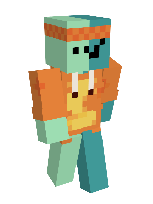

Last modified: 2023-07-10
well, we are finally here. the death of ndcs, the very end. it was fun guys, it really was, but we are here now. what can we do about that? the sun is starting to set.
ndcs was a little minecraft server with me and my friends. and it was extremely fun. we played with some mods like farmers delights, and we got to build a little town that i’m sure we’re all a little proud of <3.

(hey look its me)
oh, well… a whole load of things
at the very start1, i – as admin – spawn a bunch of overpowered stuff. the most influential are: eff 6 wooden pick, a backstabbing 255 netherite knife called “amongusus”, and thorns 255 ed’s head.
it was good times. and chaotic times as well. we don’t talk about artifacts.
i blew up ed’s house… twice. in my defence, i have no defence. he references it here.
he later set up a tnt shop, which is probably not a great idea
our democratic processes died for a second, and so we have a moment of anarchy2.
there were two people who really put in the hours and turned the server into a thriving society3. this was the industrial revolution, and we have lots and lots of autofarms, was able to wall off a massive region, and set up railway systems.
we also became essentially immortal, but there was some tension, and so we had to draft up loads of agreements.
and… suddenly it ended. just like that.
we are planning on ndcs 2 when 1.20 if everyone isn’t busy. i think it’ll be fun, to do this again.
found on spicata.99000000.xyz. no rights reserved.
published by 99 000 000.xyz.